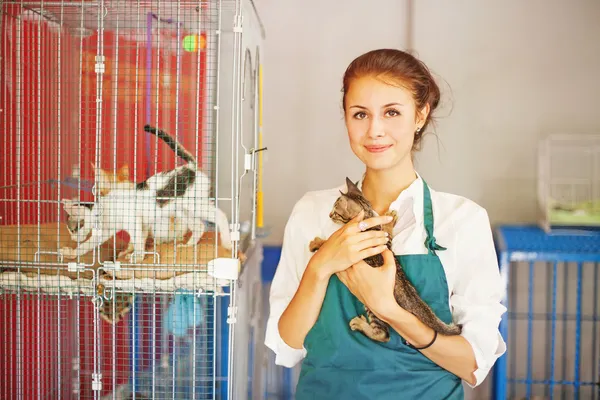
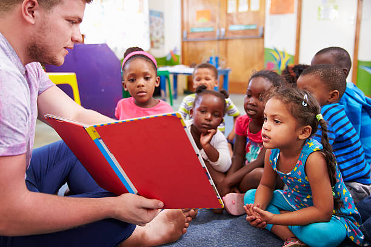

Some of the ways to easily volunteer without going out of your way are:
- Tutor Students
- Mentor A Child
- Donate Books
- Maintain The Environment
- You can help out in your local park.
- In rural areas, you can adopt a section of the highway to clean up the roadside ditches.
- Another way to keep the earth clean and beautiful is by planting trees in your neighborhood.
- Volunteer in an Animal Shelter
- Assist Your School
If you have ever been stuck on an algebraic equation or needed help with the phrasing of an important paper, you might have wished you had a tutor to help you. Tutors help give one-on-one attention to students who need to hear the material in a different way. Usually, a tutor will help find an easier way for the student to interpret and learn the material. This is a great way to spark your own creativity. Plus, you’ll get to help students build a lifelong love of learning.
While tutoring is helping a student academically, mentoring is helping a student in all aspects of life. Specific to Lee University, Big Pal, Little Pal, is a program that pairs up college students with children from the boys and girls club or other homes. This program, and mentorship in general, gives kids who may not have a good role model a chance to experience a healthy relationship with an adult.
 |
Donating books is a great way to give back to the children and families in your community. Old books from your childhood that you're still holding onto can help other children learn to read! Donating also helps maintain the budgets of schools and nonprofit organizations that may otherwise have to purchase new books. Plus, you can free up some space on your shelf to find another book you are interested in.
 |
This one is pretty simple and something you can do on a regular basis for as long as you live. Some easy ways to contribute towards the
If you are introverted and love animals then this might be it for you. You can volunteer in a community that doesn’t involve people. An animal shelter! They are always looking for volunteers to keep lively animals entertained, fed, and groomed. You may think that playing with the animals cannot be considered volunteering, but helping the cats, dogs, and other animals become more sociable and friendly to humans, will increase their chances for adoption.
|  |
Schools are almost always looking for volunteers, and because they have a wide variety of activities, you can usually help with an activity that you are interested in. If you prefer to work with adults, you can be a teacher’s assistant or take tickets at a sporting event. If you want to assist children, you can help serve lunch or watch recess. Volunteering at a local school is a great way to interact with younger minds and give back to your community.
|  |